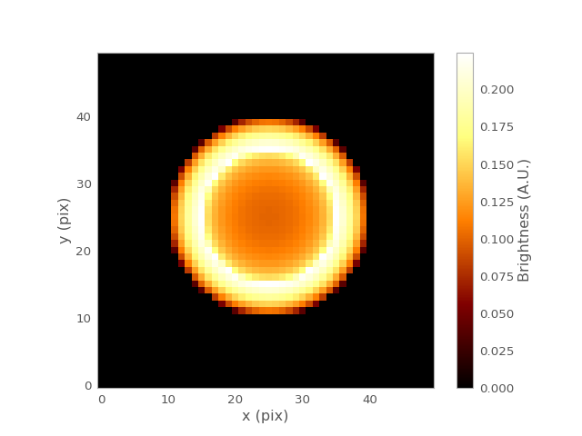

Shell2D¶
-
class
gammapy.image.models.Shell2D(amplitude, x_0, y_0, r_in, width=None, r_out=None, normed=True, **constraints)[source]¶ Bases:
astropy.modeling.Fittable2DModelProjected homogeneous radiating shell model.
This model can be used for a shell type SNR source morphology.
Parameters: amplitude : float
Value of the integral of the shell function.
x_0 : float
x position center of the shell
y_0 : float
y position center of the shell
r_in : float
Inner radius of the shell
width : float
Width of the shell
r_out : float (optional)
Outer radius of the shell
normed : bool (True)
If set the amplitude parameter corresponds to the integral of the function. If not set the ‘amplitude’ parameter corresponds to the peak value of the function (value at \(r = r_{in}\)).
Notes
Model formula with integral normalization:
\[\begin{split}f(r) = A \frac{3}{2 \pi (r_{out}^3 - r_{in}^3)} \cdot \left \{ \begin{array}{ll} \sqrt{r_{out}^2 - r^2} - \sqrt{r_{in}^2 - r^2} & : r < r_{in} \\ \sqrt{r_{out}^2 - r^2} & : r_{in} \leq r \leq r_{out} \\ 0 & : r > r_{out} \end{array} \right.\end{split}\]Model formula with peak normalization:
\[\begin{split}f(r) = A \frac{1}{\sqrt{r_{out}^2 - r_{in}^2}} \cdot \left \{ \begin{array}{ll} \sqrt{r_{out}^2 - r^2} - \sqrt{r_{in}^2 - r^2} & : r < r_{in} \\ \sqrt{r_{out}^2 - r^2} & : r_{in} \leq r \leq r_{out} \\ 0 & : r > r_{out} \end{array} \right.\end{split}\]With \(r_{out} = r_{in} + \mathrm{width}\).
Examples
import numpy as np import matplotlib.pyplot as plt from gammapy.image.models import Shell2D shell = Shell2D(amplitude=100, x_0=25, y_0=25, r_in=10, width=5) y, x = np.mgrid[0:50, 0:50] plt.imshow(shell(x, y), origin='lower', interpolation='none') plt.xlabel('x (pix)') plt.ylabel('y (pix)') plt.colorbar(label='Brightness (A.U.)') plt.grid(False) plt.show()
(Source code, png, hires.png, pdf)
Attributes Summary
amplitudeparam_namesr_inwidthx_0y_0Methods Summary
evaluate(x, y, amplitude, x_0, y_0, r_in, width)Two dimensional Shell model function normed to integral evaluate_peak_norm(x, y, amplitude, x_0, ...)Two dimensional Shell model function normed to peak value Attributes Documentation
-
amplitude¶
-
param_names= ('amplitude', 'x_0', 'y_0', 'r_in', 'width')¶
-
r_in¶
-
width¶
-
x_0¶
-
y_0¶
Methods Documentation
-
{kind=link}
{kind=link}